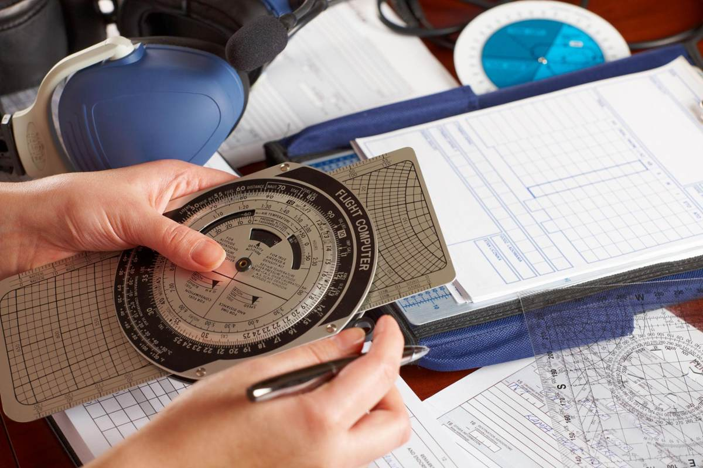
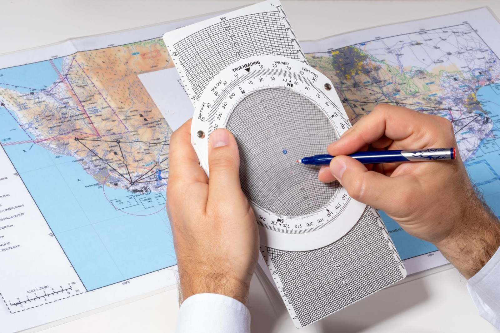
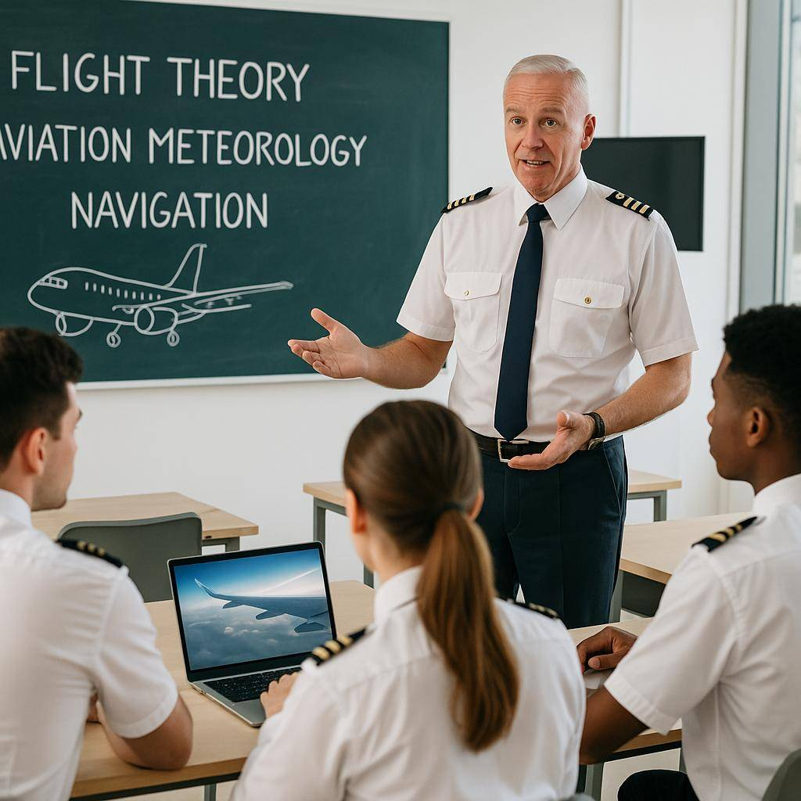
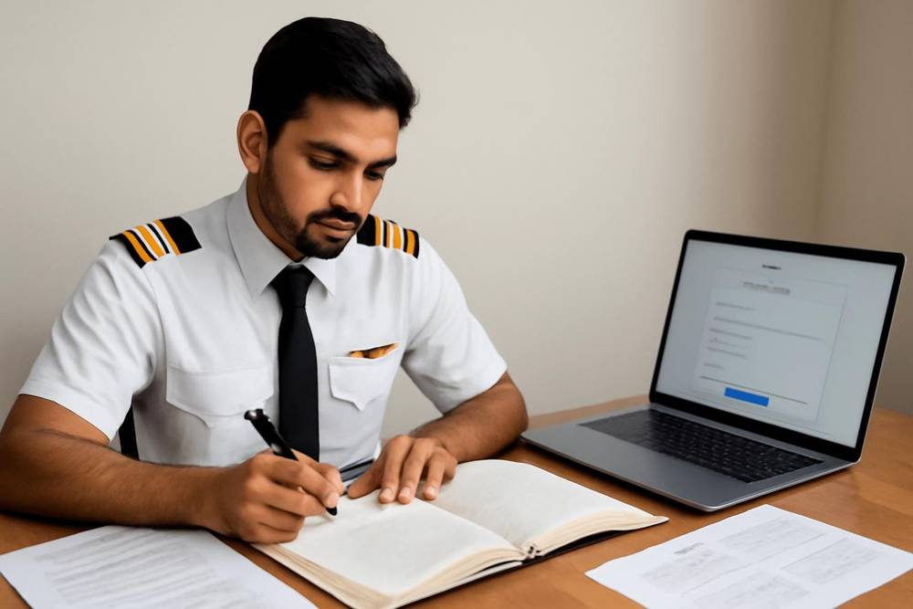

1
Airline readiness assessment
Before applying, students are evaluated across:
Technical knowledgeAviation fundamentalsCommunicationMental mathematicsSituational awarenessDecision makingProblem solvingProfessional attitudeCRM & teamwork
Airgen Aviation trains DGCA, FAA and EASA pilots in Attitude, Skills and Knowledge — and stays with them from ground school to the captain’s seat.
We don’t just prepare students to pass examinations — we prepare professionals to lead safely, think critically, and perform confidently in the cockpit.
Airgen is a next-generation aviation education and training company: experienced instructors, industry-aligned curricula and digital learning built for aspiring pilots.Career discovery, eligibility, medical guidance, licence pathway and financial planning — shaped into a personalised roadmap.
DGCA, FAA and EASA ground school with live classes, recorded modules, CBT and test series, built on Attitude, Skills and Knowledge.
Airline readiness, selection preparation, First Officer development and the competencies that lead toward command.
Stage 1 · Thinking. Before any training begins, Airgen helps you decide, one step at a time.
ASK is not a subject. It is a competency system woven through every subject and every licence — the bridge between DGCA theory and airline reality.
ASK is integrated into
Professional mindset: discipline, communication and decision making.
Pilot thinking: mental maths, problem solving and situational awareness.
The ATPL subjects of DGCA, FAA and EASA theory.
Through instructor observation, scenario exercises, mental arithmetic tests, progress reviews and structured assessments — graded on a developmental scale, so support comes early.
You are meeting the expected competency standard.
You are progressing, with specific areas to strengthen.
You need more support in this competency before moving on.

Skills in practice: estimate without a calculator, then check yourself.
Type your name or a call sign and see it spelled in the ICAO radiotelephony alphabet.

Attitude, Skills and Knowledge, from ground school to airline readiness.
Airgen continues beyond examinations. The aim is not simply to get a pilot job, but to build the competencies required to progress toward command.
Before applying, students are evaluated across:
Technical
Non-technical
Competencies commonly encountered during airline selection:
Build the mindset required before entering airline training:
Goal
Cadet → Junior First Officer → First Officer
First Officer → Senior First Officer → Command
ASK is not a separate ATPL subject. It is a competency framework integrated throughout training.
“We don’t train students just to earn a licence. We develop aviators for a career — from their first decision to their future command.”
To transform aviation education by developing technically proficient, safety-focused and globally competent aviation professionals through innovative learning, expert mentorship and industry-leading technology.
To become one of the world’s most trusted aviation education ecosystems, empowering the next generation of pilots through excellence, innovation and a commitment to global aviation standards.
Sound judgement, communication and risk management, practised until they become instinct.

A short call to walk you through the Airgen pathway for DGCA, FAA or EASA and answer your questions about ground training.
